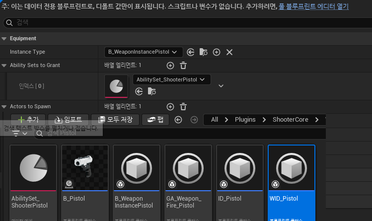
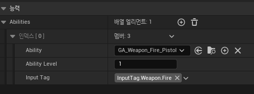
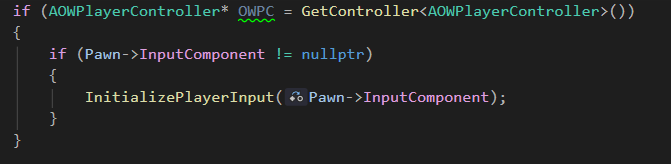
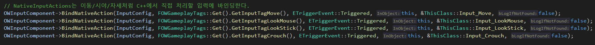

Skill은 만드는 방법도 제각각이고 요즘 대규모 온라인게임도 많아지는데 수많은 캐릭터들에게 스킬을 컴포넌트 식으로 붙여주자는 개념에서 나온 시스템이다.
라이라에서는
공격, 스킬 이외에도
점프, 죽음, 정보창열기 등을 모두 GAS로 구현되어있다.
액터들은 액터에게 AbilitySystemComponent를 장착하는 것으로 능력을 갖게된다.
예를들어 트레이서ASC를 장착하면 그 액터는 그때부터 트레이서가 되는것
기본적인 요약.
- ASC가 특정 폰의 어빌리티 관리
- 어빌리티 발동 성공
- 어빌리티가 이펙트를 남김 (일반적으로 데미지를 준다고 생각하면 됨)
- 이펙트의 영향을 받은 폰의 어트리뷰트를(스탯) 수정
- 예를들어 체력이 0이되면 해당 폰의 death 어빌리티 발동
우선 UAbilitySystemComponent 과 UGameplayAbility 을 만든다.
UAbilitySystemComponent 은 Character나 PlayerState에 장착한다.
PlayerState에 장착하는 이유는AbilitySystemComponent 은 Pawn이 죽든, 다른Pawn으로 교체되던 살아있어야하기 때문이다 (예를들면 오버워치의 궁극기 게이지라던지 그런게 확 바뀌면 안되잖음)
만약 싱글게임이고 캐릭터 변경이 없다면 캐릭터에 장착하도 무방하나 멀티플레이어 게임이면 playerstate를 사용한다
(일반적으로 PlayerState는 Player의 정보중 남이 알아야하는 정보들을 상대방에게 넘기기 위해 사용되기 때문이다.
근데 AbilitySystem은 hp, mp, 애니메이션등의 정보등이 전달이 되어야 하기 때문에 PS에 장착한다.)
왜냐하면character면 Possess하는 타이밍이 모호한데 ps는 herocomp에서 되는것을 우리가 보장하기 때문이다
그리고 상대적으로 네트워크 수명이 안정적이기 때문이다.
AOWPlayerState::AOWPlayerState()
{
AbilitySystemComponent = CreateDefaultSubobject<UOWAbilitySystemComponent>(TEXT("AbilitySystemComponent"));
}
void AOWPlayerState::PostInitializeComponents()
{
Super::PostInitializeComponents();
if (!AbilitySystemComponent)
{
check(AbilitySystemComponent);
return;
}
// PS는 PC가 생긴 이후에 생긴다.
// 처음 InitAbilityActorInfo를 호출하면 OwnerActor와 AvatarActor가 모두 PlayerState가 된다.
/*
void UAbilitySystemComponent::InitializeComponent()
{
// Look for DSO AttributeSets (note we are currently requiring all attribute sets to be subobjects of the same owner. This doesn't *have* to be the case forever.
AActor *Owner = GetOwner();
InitAbilityActorInfo(Owner, Owner); // Default init to our outer owner
여기서 Owner는 PlayerState임
}
*/
// 허나 OwnerActor은 PS가 맞지만 AvatarActor는 PC가 소유하는 대상Pawn이 되어야 한다.
// 이를 위해 Pawn을 AvatarActor로 다시 연결한다.
// 하지만 아직 PC가 Pawn을 Possess하지 않은 상태라면 GetPawn()은 nullptr이므로 InitAbilityActorInfo를 호출하지 않는다.
AbilitySystemComponent->InitAbilityActorInfo(this, GetPawn());
UWorld* World = GetWorld();
if (World && World->IsGameWorld() && World->GetNetMode() != NM_Client)
{
const AGameStateBase* GameState = World->GetGameState();
if (GameState)
{
if (UOWExperienceManagerComponent* ExperienceManagerComponent = GameState->FindComponentByClass<UOWExperienceManagerComponent>())
{
ExperienceManagerComponent->CallOrRegister_OnExperienceLoaded(FOnOWExperienceLoaded::FDelegate::CreateUObject(this, &ThisClass::OnExperienceLoaded));
// 내부에서 AOWPlayerState::SetPawnData
}
}
}
}
// Experience로드가 끝나면 PawnData의 어빌리티들을 꺼내와서 부여해준다.
void AOWPlayerState::SetPawnData(const UOWPawnData* InPawnData)
{
PawnData = InPawnData;
// PawnData의 AbilitySet을 순회하며 ASC에 Ability를 부여한다.
// 이 단계에서 ASC의 ActivatableAbilities에 GameplayAbilitySpec이 추가된다.
for (UOWAbilitySet* AbilitySet : PawnData->AbilitySets)
{
if (AbilitySet)
{
AbilitySet->GiveAbilitySystem(AbilitySystemComponent, nullptr);
}
}
ForceNetUpdate();
}
위 코드의 주석대로라면 어디선가 Pawn을 AvatarActor로 다시 연결해주는 작업이 필요할 것이다.
만약 AbilitySystemComponent->InitAbilityActorInfo(this, GetPawn()); 여기서 이미 GetPawn이 성공 했으면 상관 없겠지만 실패를하면 확실한 어딘가에서 해줘야할 것이다.
이 작업은 UOWHeroComponent에서 해준다.
왜? ⇒ HandleChangeInitState에서 Pawn의 생명주기가 가장 확실하게 추적이 가능하기 때문이다.
void UOWHeroComponent::HandleChangeInitState(UGameFrameworkComponentManager* InManager, FGameplayTag InCurrentState, FGameplayTag InDesiredState)
{
...
// DataInitialized 확인!
if (InCurrentState != InitTags.InitState_DataAvailable || InDesiredState != InitTags.InitState_DataInitialized)
{
return;
}
// DataAvailable -> DataInitialized 단계에서 Pawn은 Controller에 possess되어 준비된 상태다.
APawn* Pawn = GetPawn<APawn>();
AOWPlayerState* PlayerState = GetPlayerState<AOWPlayerState>();
const UOWPawnData* PawnData = nullptr;
if (UOWPawnExtensionComponent* PawnExtensionComponent = UOWPawnExtensionComponent::FindPawnExtensionComponent(Pawn))
{
PawnData = PawnExtensionComponent->GetPawnData<UOWPawnData>();
// DataInitialized까지 오면 Pawn이 Controller에 Possess되어 준비된 상황이다.
// 그니까 InitializeAbilitySystem에서 올바른 아바타 액터를 장착이 가능해지는 것이다.
// PlayerState는 지속 데이터를 소유한다. (죽음과 여러 폰에 걸쳐 지속되는 상태)
// ASC도 PlayerState에 있으므로 PawnExtension을 통해 현재 Pawn을 AvatarActor로 연결한다.
PawnExtensionComponent->InitializeAbilitySystem(PlayerState->GetOWAbilitySystemComponent(), PlayerState);
}
}
여기까지 왔으면 안전하게 초기화가 됐을것이고 Experience로드까지 끝나면 UOWAbilitySet::GiveAbilitySystem 이 호출이 되었을것
void UOWAbilitySet::GiveAbilitySystem(UOWAbilitySystemComponent* InASC, FOWAbilitySet_GrantedHandles* OutGrantedHandles, UObject* SourceObject) const
{
// GA를 허용
// 컴포넌트에 데이터 내 모든 능력을 부여한다.
for (int32 AbilityIndex = 0; AbilityIndex < Abilities.Num(); ++AbilityIndex)
{
const FOWAbilitySet_GameplayAbility& AbilityToGrant = Abilities[AbilityIndex];
if (!IsValid(AbilityToGrant.Ability))
{
continue;
}
// GiveAbility에서 만약 EGameplayAbilityInstancingPolicy가 InstancePerActor인 경우, 내부적으로 Instance를 생성하지만
// 그렇지 않으면 CDO에서 GetDefaultObject를 통해 객체를 생성한다.
// - 이를 통해 UObject개수를 줄여 부하 줄일 수 있다.
// CCProject에서 InstancedStruct를와 CDO로직을 병행했던 것이랑 비슷한 구조라고 볼 수 있겠다.
UOWGameplayAbility* AbilityCDO = AbilityToGrant.Ability->GetDefaultObject<UOWGameplayAbility>();
// FGameplayAbilitySpec는 AbilityCDO능력을 부여할건데 어떤 정보를 가지고 부여할것인지 정의
// AbilitySpec은 GiveAbility로 전달되어 ActivatableAbilities에 추가된다.
FGameplayAbilitySpec Spec(AbilityCDO, AbilityToGrant.AbilityLevel);
Spec.SourceObject = SourceObject;
Spec.GetDynamicSpecSourceTags().AddTag(AbilityToGrant.InputTag); // 이 능력은 어떤 태그랑 매치시킬거야~ 라고 명시
// 여담으로 언리얼에서는 항상 Handle을 사용한다.
// 이는 객체의 직접 비교를 막고 int데이터로만 비교를 하는게 더 가볍기 때문이다)
const FGameplayAbilitySpecHandle AbilitySpecHandle = InASC->GiveAbility(Spec);
if (OutGrantedHandles)
{
OutGrantedHandles->AddAbilitySpecHandle(AbilitySpecHandle);
}
}
}
GiveAbility는 내부적으로FGameplayAbilitySpec& OwnedSpec = ActivatableAbilities.Items[ActivatableAbilities.Items.Add(Spec)]; 이렇게 추가가된다.
FGameplayAbilitySpecHandle 은 Handle이니까 내부에 int의 Handle값을 들고 있는데 이Handle값은 ActivatableAbilities 의 배열 인덱스를 의미한다. ⇒ 성능적으로 유리
점프처럼 공통적이고 기본적인 Ability들은 보통 PawnData에 추가한다고 한다.
이제 무기에 어빌리티들을 바인딩 해야한다. 총에서 총알나가는것도 어빌리티다
그러기 위해서는 무기 데이터에 어빌리티가 추가가 되어야 할 것이다.
무기 데이터 정의는 UOWEquipmentDefinition 에 하고있다.
따라서 여기에 추가하면 되겠다.
/** 장착 가능한 장비의 데이터 정의다. 런타임 상태는 EquipmentInstance가 소유한다. */
UCLASS(Blueprintable, Const, Abstract, BlueprintType)
class OVERWATCH_API UOWEquipmentDefinition : public UObject
{
GENERATED_BODY()
public:
UOWEquipmentDefinition(const FObjectInitializer& ObjectInitializer = FObjectInitializer::Get());
/** 이 장비가 장착될 때 생성할 런타임 인스턴스 타입 */
/** 장착 가능한 장비의 데이터 정의다. 런타임 상태는 EquipmentInstance가 소유한다. */
// 인스턴스 객체는 맞음 맞는데 Equipment주체가 아니라 해당 Equipment를 관리하는 방식을 결정하는 클래스라고 생각하면 될듯
/** 이 장비가 장착될 때 생성할 런타임 상태 객체 타입이다. 장비별 동작 차이는 이 타입의 override로 확장한다. */
UPROPERTY(EditDefaultsOnly, Category = Equipment)
TSubclassOf<UOWEquipmentInstance> InstanceType;
/** 장착 중 Pawn에 부착할 표현용 Actor 정의 목록이다. 실제 스폰/제거된 Actor의 런타임 상태는 EquipmentInstance가 소유한다. */
UPROPERTY(EditDefaultsOnly, Category = Equipment)
TArray<FOWEquipmentActorToSpawn> ActorsToSpawn;
/** 장착 중 ASC에 부여하고 해제 시 회수할 AbilitySet 목록이다. 부여/회수 핸들은 EquipmentList 엔트리가 소유한다. */
UPROPERTY(EditDefaultsOnly, Category = Equipment)
TArray<TObjectPtr<const UOWAbilitySet>> AbilitySetsToGrant;
};
FOWEquipmentList::AddEntry 가 기억 날것이다.
Equipment추가 관련해 모든것을 해주던.. (인스턴스 캐싱, Actor 스폰)
이제 여기서 ASC 부여까지 해줄것이다.
UOWEquipmentInstance* FOWEquipmentList::AddEntry(TSubclassOf<UOWEquipmentDefinition> EquipmentDefinition)
{
// 여기서 모든게 진행된다. (인스턴스 캐싱, ASC 부여, Actor 스폰)
FOWAppliedEquipmentEntry& NewEntry = Entries.AddDefaulted_GetRef();
NewEntry.EquipmentDefinition = EquipmentDefinition; // Definition 부여
// 어빌리티 부여
if (UOWAbilitySystemComponent* AbilitySystemComponent = GetAbilitySystemComponent())
{
// Definition의 AbilitySetsToGrant가져와서 런타임데이터로 추가!
for (const TObjectPtr<const UOWAbilitySet>& AbilitySet : EquipmentCDO->AbilitySetsToGrant)
{
if (AbilitySet)
{
AbilitySet->GiveAbilitySystem(AbilitySystemComponent, &NewEntry.GrantedHandles, NewEntry.Instance);
}
}
}
NewEntry.Instance->SpawnEquipmentActors(EquipmentCDO->ActorsToSpawn); // 스폰
return NewEntry.Instance;
}
추가된 Ability는 FOWAbilitySet_GrantedHandles GrantedHandles 여기로 들어간다.
/** Pawn에 적용된 단일 장비 항목이다. */
USTRUCT(BlueprintType)
struct FOWAppliedEquipmentEntry : public FFastArraySerializerItem
{
GENERATED_BODY()
FString GetDebugString() const;
private:
friend struct FOWEquipmentList;
friend class UOWEquipmentManagerComponent;
// 아래 변수들은 FastArrayDeltaSerialize에 의해 자동으로 직렬화되려고 한다.
// 그래서 직렬화 안할애한테는 NotReplicated를 붙여야 한다. (FastArrayDeltaSerialize는 FFastArraySerializerItem을 상속받은 구조체의 UPROPERTY를 직렬화한다.)
UPROPERTY()
TSubclassOf<UOWEquipmentDefinition> EquipmentDefinition;
UPROPERTY()
TObjectPtr<UOWEquipmentInstance> Instance = nullptr;
/** 장착 시 부여된 AbilitySet 핸들은 서버에서만 보관하고 해제 시 회수한다. 부여된 능력을 관리하기위해 사용 */
UPROPERTY(NotReplicated)
FOWAbilitySet_GrantedHandles GrantedHandles;
};

이제 무기에 만든 어빌리티를 넣었다.
그런데 지금 어빌리의 내부는 구현되어있지 않다.

AbilitySet은 Ability와 InputTag의 집합이다.
InputTag를 저렇게 넣어줬으니까, 이제 마우스 클릭할때 저 태그를 호출해주면 될것같은 느낌
BindAbilityActions 에서 BindAction을 처리한다.BindAbilityActions 은 특이하게 트리거 이벤트를 정해서 받는게 아니라 2개 둘 다 받는다.
template <class UserClass, typename PressedFuncType, typename ReleasedFuncType>
void UOWInputComponent::BindAbilityActions(const UOWInputConfig* InInputConfig, UserClass* InObject, PressedFuncType InPressedFunc, ReleasedFuncType InReleasedFunc, TArray<uint32>& OutBindHandles)
{
// AbilityAction에 대해서는 그냥 모든 InputAction에 바인딩시킨다.
for (const FOWInputAction& Action : InInputConfig->AbilityInputActions)
{
if (Action.InputAction && Action.InputTag.IsValid())
{
if (InPressedFunc)
{
// Triggered는 Ability 입력 Pressed로 취급하고, InputTag를 함께 전달한다.
OutBindHandles.Add(BindAction(Action.InputAction, ETriggerEvent::Triggered, InObject, InPressedFunc, Action.InputTag).GetHandle());
}
if (InReleasedFunc)
{
// Completed는 Ability 입력 Released로 취급하고, InputTag를 함께 전달한다.
OutBindHandles.Add(BindAction(Action.InputAction, ETriggerEvent::Completed, InObject, InReleasedFunc, Action.InputTag).GetHandle());
}
}
}
}
BindAction(Action.InputAction, ETriggerEvent::Triggered, InObject, InPressedFunc, Action.InputTag)
함수의 마지막엔 InputTag를 받는다.
InPressedFunc 이후에 오는 매개변수들은 전부 InPressedFunc로 넘어간다고한다.
HandleChangeInitStated의 DataInitialized에서 플레이어 인풋을 초기화 한다.

바인딩할때 위에서 만든 Trigger/Complete 둘 다 되는 함수에 한 번 바인딩하는 것으로 바인딩을 마친다.
// AbilityInputActions는 GameplayTag를 ASC에 전달하여 GameplayAbility가 직접 입력으로 활성화되게 한다.
// 그래서 바인딩할때 태그로 구분하는거니까 하나만 바인딩해도 된다.
OWInputComponent->BindAbilityActions(InputConfig, this, &ThisClass::Input_AbilityInputTagPressed, &ThisClass::Input_AbilityInputTagReleased, BindHandles);
원래 NativeBinding은 함수별로 바인딩해줘야한다.

여기서 Press함수와 Release함수를 동시에 바인딩 한 이유가 나온다
AbilityInput에 넣은 함수들은 키 누를 때 AbilityInputTagPressed 호출되고 뗄 때 AbilityInputTagReleased호출되는게 전부
void UOWHeroComponent::Input_AbilityInputTagPressed(FGameplayTag InInputTag)
{
// ASC가 GameplayTag와 매칭되는 AbilitySpec을 찾아 Pressed/Held 큐에 넣는다.
AbilitySystemComponent->AbilityInputTagPressed(InInputTag);
}
void UOWHeroComponent::Input_AbilityInputTagReleased(FGameplayTag InInputTag)
{
// ASC가 GameplayTag와 매칭되는 AbilitySpec을 찾아 Released 큐에 넣고 Held에서 제거한다.
AbilitySystemComponent->AbilityInputTagReleased(InInputTag);
}
그럼 위에서 호출하는 2개의 함수를 보자
함수를 보면 누르거나 뗀 어빌리티들을 어빌리티 큐에 모아넣는걸 볼 수 있다. (여기서 Held는 계속 누르고 있는것)
void UOWAbilitySystemComponent::AbilityInputTagPressed(const FGameplayTag& InInputTag)
{
// 부여된 모든 GameplayAbilitySpec을 순회하며
// 입력 태그와 매칭되는 Ability를 Pressed/Held 큐에 넣는다.
for (const FGameplayAbilitySpec& AbilitySpec : ActivatableAbilities.Items)
{
if (AbilitySpec.Ability && AbilitySpec.GetDynamicSpecSourceTags().HasTagExact(InInputTag))
{
InputPressedSpecHandles.AddUnique(AbilitySpec.Handle);
InputHeldSpecHandles.AddUnique(AbilitySpec.Handle);
}
}
}
void UOWAbilitySystemComponent::AbilityInputTagReleased(const FGameplayTag& InInputTag)
{
// Released 큐에 추가하고 Held 큐에서는 제거한다.
for (const FGameplayAbilitySpec& AbilitySpec : ActivatableAbilities.Items)
{
if (AbilitySpec.Ability && AbilitySpec.GetDynamicSpecSourceTags().HasTagExact(InInputTag))
{
InputReleasedSpecHandles.AddUnique(AbilitySpec.Handle);
InputHeldSpecHandles.Remove(AbilitySpec.Handle);
}
}
}
위에서 인풋이 들어와서 모아놓은 어빌리티들을 처리한다.
Held → Pressed목록을 가져와서 활성화 시켜주고 Released 이벤트를 전달하는 순으로 처리된다.
void UOWAbilitySystemComponent::ProcessAbilityInput(float InDeltaTime, bool bInGamePaused)
{
TArray<FGameplayAbilitySpecHandle> AbilitiesToActivate;
// InputHeldSpecHandles에서 WhileInputActive 정책 Ability를 찾아 활성화 대상으로 모은다.
for (const FGameplayAbilitySpecHandle& SpecHandle : InputHeldSpecHandles)
{
// ActivatableAbilities에서 Handle로 GameplayAbilitySpec을 찾는다.
if (const FGameplayAbilitySpec* AbilitySpec = FindAbilitySpecFromHandle(SpecHandle))
{
if (AbilitySpec->Ability && !AbilitySpec->IsActive())
{
const UOWGameplayAbility* AbilityCDO = CastChecked<UOWGameplayAbility>(AbilitySpec->Ability);
if (AbilityCDO->GetActivationPolicy() == EOWAbilityActivationPolicy::WhileInputActive)
{
// ActivationPolicy가 WhileInputActive이면 입력이 유지되는 동안 활성화를 시도한다.
AbilitiesToActivate.AddUnique(AbilitySpec->Handle);
}
}
}
}
// 이번 프레임에 Pressed된 Ability를 처리한다.
for (const FGameplayAbilitySpecHandle& SpecHandle : InputPressedSpecHandles)
{
if (FGameplayAbilitySpec* AbilitySpec = FindAbilitySpecFromHandle(SpecHandle))
{
if (AbilitySpec->Ability)
{
AbilitySpec->InputPressed = true;
if (AbilitySpec->IsActive())
{
// 이미 활성화된 Ability라면 InputPressed 이벤트를 전달한다.
AbilitySpecInputPressed(*AbilitySpec);
}
else
{
const UOWGameplayAbility* AbilityCDO = CastChecked<UOWGameplayAbility>(AbilitySpec->Ability);
if (AbilityCDO->GetActivationPolicy() == EOWAbilityActivationPolicy::OnInputTriggered)
{
// ActivationPolicy가 OnInputTriggered이면 이번 Press에서 활성화를 시도한다.
AbilitiesToActivate.AddUnique(AbilitySpec->Handle);
}
}
}
}
}
// 모아둔 Ability를 한 번에 활성화한다.
for (const FGameplayAbilitySpecHandle& AbilitySpecHandle : AbilitiesToActivate)
{
TryActivateAbility(AbilitySpecHandle);
}
// 이번 프레임에 Released된 Ability를 처리한다.
for (const FGameplayAbilitySpecHandle& SpecHandle : InputReleasedSpecHandles)
{
if (FGameplayAbilitySpec* AbilitySpec = FindAbilitySpecFromHandle(SpecHandle))
{
if (AbilitySpec->Ability)
{
AbilitySpec->InputPressed = false;
if (AbilitySpec->IsActive())
{
// 활성화된 Ability라면 InputReleased 이벤트를 전달한다.
AbilitySpecInputReleased(*AbilitySpec);
}
}
}
}
// Held는 Released가 들어올 때 제거되므로 프레임 큐인 Pressed/Released만 비운다.
InputPressedSpecHandles.Reset();
InputReleasedSpecHandles.Reset();
}
// 프레임의 모든 인풋이 처리되고나서 호출되는 함수
void AOWPlayerController::PostProcessInput(const float InDeltaTime, const bool bInGamePaused)
{
if (UOWAbilitySystemComponent* AbilitySystemComponent = GetOWAbilitySystemComponent())
{
// UPlayerInput::ProcessInputStack 이후 모아둔 Ability 입력 큐를 ASC에서 처리한다.
AbilitySystemComponent->ProcessAbilityInput(InDeltaTime, bInGamePaused);
}
Super::PostProcessInput(InDeltaTime, bInGamePaused);
}
이제 InputAction과 어빌리티를 연결하는 작업을 하면 된다.
FGamePlayAbilityActorInfo
FGamePlayAbilityActorInfo는 Ability, Attribute, Tag, Montage등을 동작하는데 필수적인 구조체이다.
이 구조체가 초기화되지 않으면 능력이 실행이 되지 않거나, 속성부여가 안되는 버그가 있다.
UOWAbilitySet
캐릭터가 사용할 GameplayAbility 목록을 데이터로 정의하는 에셋이다.
코드
// Fill out your copyright notice in the Description page of Project Settings.
#pragma once
#include "CoreMinimal.h"
#include "Engine/DataAsset.h"
#include "AbilitySystemComponent.h"
/*
* GA의 WrapperClass
*/
class UOWAbilitySystemComponent;
class UOWGameplayAbility;
USTRUCT(BlueprintType)
struct FOWAbilitySet_GameplayAbility
{
GENERATED_BODY()
// 허용된 GameplayAbility
UPROPERTY(EditDefaultsOnly)
TSubclassOf<UOWGameplayAbility> Ability = nullptr;
// Input처리를 위한 GameplayTag
UPROPERTY(EditDefaultsOnly)
FGameplayTag InputTag;
// Ability의 금지 조건
UPROPERTY(EditDefaultsOnly)
TArray<FGameplayTag> BlockedTag;
};
USTRUCT(BlueprintType)
struct FOWAbilitySet_GrantedHandles
{
GENERATED_BODY()
void AddAbilitySpecHandle(const FGameplayAbilitySpecHandle& Handle);
void TakeFromAbilitySystem(UOWAbilitySystemComponent* InASC) const;
// 허용된 GameplayAbilitySpecHandle (int32)
UPROPERTY()
TArray<FGameplayAbilitySpecHandle> AbilitySpecHandles;
};
UCLASS()
class OVERWATCH_API UOWAbilitySet : public UPrimaryDataAsset
{
GENERATED_BODY()
UPROPERTY(EditDefaultsOnly, Category = "Abilities")
TArray<FOWAbilitySet_GameplayAbility> Abilities;
public:
void GiveAbilitySystem(UOWAbilitySystemComponent* InASC, FOWAbilitySet_GrantedHandles* OutGrantedHandles, UObject* SourceObject = nullptr) const;
};
// Fill out your copyright notice in the Description page of Project Settings.
#include "AbilitySystem/OWAbilitySet.h"
#include "OWAbilitySystemComponent.h"
#include "Abilities/OWGameplayAbility.h"
void FOWAbilitySet_GrantedHandles::AddAbilitySpecHandle(const FGameplayAbilitySpecHandle& Handle)
{
if (Handle.IsValid())
{
AbilitySpecHandles.Add(Handle);
}
}
void FOWAbilitySet_GrantedHandles::TakeFromAbilitySystem(UOWAbilitySystemComponent* InASC) const {}
void UOWAbilitySet::GiveAbilitySystem(UOWAbilitySystemComponent* InASC, FOWAbilitySet_GrantedHandles* OutGrantedHandles, UObject* SourceObject) const
{
if (!InASC)
{
return;
}
if (!InASC->IsOwnerActorAuthoritative())
{
return;
}
// GA를 허용
// 컴포넌트에 데이터 내 모든 능력을 부여한다.
for (int32 AbilityIndex = 0; AbilityIndex < Abilities.Num(); ++AbilityIndex)
{
const FOWAbilitySet_GameplayAbility& AbilityToGrant = Abilities[AbilityIndex];
if (!IsValid(AbilityToGrant.Ability))
{
continue;
}
// GiveAbility에서 만약 EGameplayAbilityInstancingPolicy가 InstancePerActor인 경우, 내부적으로 Instance를 생성하지만
// 그렇지 않으면 CDO에서 GetDefaultObject를 통해 객체를 생성한다.
// - 이를 통해 UObject개수를 줄여 부하 줄일 수 있다.
// CCProject에서 InstancedStruct를와 CDO로직을 병행했던 것이랑 비슷한 구조라고 볼 수 있겠다.
UOWGameplayAbility* AbilityCDO = AbilityToGrant.Ability->GetDefaultObject<UOWGameplayAbility>();
// FGameplayAbilitySpec는 AbilityCDO능력을 부여할건데 어떤 정보를 가지고 부여할것인지 정의
// AbilitySpec은 GiveAbility로 전달되어 ActivatableAbilities에 추가된다.
FGameplayAbilitySpec Spec(AbilityCDO);
Spec.SourceObject = SourceObject;
Spec.DynamicAbilityTags.AddTag(AbilityToGrant.InputTag); // 이 능력은 어떤 태그랑 매치시킬거야~ 라고 명시
// 여담으로 언리얼에서는 항상 Handle을 사용한다.
// 이는 객체의 직접 비교를 막고 int데이터로만 비교를 하는게 더 가볍기 때문이다)
const FGameplayAbilitySpecHandle AbilitySpecHandle = InASC->GiveAbility(Spec);
if (OutGrantedHandles)
{
OutGrantedHandles->AddAbilitySpecHandle(AbilitySpecHandle);
}
}
}
즉, "솔저76은 어떤 Ability들을 가지는가"를 코드 분기 대신 데이터로 관리하기 위한 클래스이다.
GAS에서는 Ability를 ASC에 직접 하나씩 GiveAbility() 로 넣을 수 있는데,
캐릭터마다 부여해야 할 Ability가 많아지면 코드가 지저분해지고 관리 포인트가 흩어진다.
그래서 Ability 목록을 하나의 Asset으로 묶어두고, 필요할 때 ASC에 일괄 부여하는 방식으로 관리한다.
왜 필요한가
- 캐릭터별 Ability 구성을 데이터로 분리할 수 있다.
- 코드에서
if Hero == Soldier76같은 분기를 줄일 수 있다. - HeroData, PawnData 같은 상위 데이터에서 AbilitySet만 참조하면 된다.
- 리스폰, 영웅 선택, loadout 변경 시 같은 부여 로직을 재사용할 수 있다.
현재 구조
FOWAbilitySet_GameplayAbility 는 AbilitySet 안에 들어가는 개별 Ability 정의이다.
Ability- 실제로 부여할
UOWGameplayAbility클래스
- 실제로 부여할
InputTag- 이 Ability가 어떤 입력 태그와 연결되는지 정의
- 예:
InputTag.Ability.Skill1
BlockedTag- 해당 Ability가 막혀야 하는 조건 태그
- 현재 구조에는 존재하지만 아직 실제 부여/활성 로직에는 반영되지 않았다.
즉, AbilitySet은
"어떤 Ability를 줄지"
"어떤 입력 태그와 연결할지"
를 데이터로 들고 있는 컨테이너라고 볼 수 있다.
GiveAbilitySystem
UOWAbilitySet::GiveAbilitySystem() 은 AbilitySet 내부의 Ability들을 UOWAbilitySystemComponent 에 실제로 부여하는 함수이다.
동작 흐름은 다음과 같다.
- 대상 ASC가 유효한지 확인한다.
- ASC 소유자가 권한(authority)을 가지고 있는지 확인한다.
- AbilitySet 안의 Ability 목록을 순회한다.
- 각 Ability 클래스의 CDO를 가져온다.
FGameplayAbilitySpec를 만든다.SourceObject와InputTag를 Spec에 설정한다.GiveAbility()로 ASC에 등록한다.- 반환된
FGameplayAbilitySpecHandle을 저장한다.
여기서 중요한 점은
AbilitySet이 Ability를 "실행"하는 것이 아니라
ASC에 Ability를 "등록"하는 역할만 한다는 것이다.
왜 CDO를 사용하는가
코드에서는 Ability 클래스에서 GetDefaultObject<UOWGameplayAbility>() 를 통해 CDO를 가져온다.
이유는 FGameplayAbilitySpec 가 Ability 클래스의 기본 객체를 기반으로 능력을 등록하기 때문이다.
Ability가 무조건 인스턴스 객체 하나씩 생성되는 것이 아니라, Instancing Policy에 따라 CDO 기반으로 동작할 수도 있다.
즉, 여기서는
- Ability Asset/클래스 정의를 읽고
- Spec을 만들고
- ASC에 등록하기 위한 준비를 하는 것이다.
FGameplayAbilitySpec
FGameplayAbilitySpec 는 "어떤 Ability를 어떤 조건으로 ASC에 부여할 것인가"를 담는 구조체이다.
현재 프로젝트 코드에서는 다음 정보가 들어간다.
- Ability CDO
SourceObjectDynamicAbilityTags
특히 DynamicAbilityTags 에 InputTag 를 넣는 부분이 중요하다.
이렇게 하면 나중에 ASC가 "입력 태그 기준으로 어떤 Ability를 활성화할지" 찾을 수 있다.
즉,
입력 -> InputTag 발생
ASC -> 해당 InputTag를 가진 AbilitySpec 검색
Ability 활성화
라는 흐름으로 이어질 수 있다.
SourceObject
Spec.SourceObject = SourceObject;
SourceObject 는 이 Ability가 어떤 원본 객체로부터 왔는지를 기록하는 용도다.
보통 무기, 장비, 영웅 데이터, 장착 아이템 같은 소유/출처 정보를 추적할 때 유용하다.
예를 들어,
- 어떤 무기에서 부여된 Ability인지
- 어떤 HeroData에서 들어온 Ability인지
구분할 수 있게 된다.
GrantedHandles
FOWAbilitySet_GrantedHandles 는 AbilitySet이 ASC에 부여한 Ability들의 Handle 목록을 저장하는 구조체이다.
이 구조체가 필요한 이유는
나중에 "이 AbilitySet이 넣었던 Ability만 다시 회수" 해야 할 수 있기 때문이다.
예를 들어,
- 영웅 변경
- 장비 해제
- 상태 종료
- 리스폰 시 재구성
같은 상황에서는 기존 Ability를 제거해야 한다.
이때 FGameplayAbilitySpecHandle 목록을 저장해두면, 그 Handle들만 정확히 찾아서 제거할 수 있다.
즉, GrantedHandles 는
"부여 기록"
이자
"나중에 회수하기 위한 추적 정보"
라고 보면 된다.
TakeFromAbilitySystem
TakeFromAbilitySystem() 은 현재 비어 있지만, 의도는 명확하다.
- 저장해둔
AbilitySpecHandle목록을 순회하면서 - ASC에서 해당 Ability들을 제거하고
- 필요하면 내부 목록도 정리하는 함수가 될 가능성이 높다.
즉, GiveAbilitySystem() 이 등록 함수라면
TakeFromAbilitySystem() 은 해제 함수 역할이다.
이 클래스의 책임
UOWAbilitySet 의 책임은 명확하게 제한하는 것이 좋다.
- Ability 목록을 데이터로 가진다.
- 그 Ability들을 ASC에 부여한다.
- 부여된 Handle을 추적할 수 있게 돕는다.
반대로 아래 책임은 여기 넣지 않는 것이 좋다.
- Ability 실행 로직
- 입력 처리 자체
- UI 갱신
- Hero 선택 결정
- Attribute 계산
- Pawn 제어
즉, AbilitySet은 "부여 데이터와 등록 절차"까지만 맡는 것이 좋다.
현재 프로젝트 버전에서 중요 포인트
현재 코드 기준으로 보면 OWAbilitySet 은 이미 좋은 출발점이다.
- Ability를 데이터 에셋으로 관리한다.
- InputTag를 AbilitySpec에 심어둔다.
- 부여된 Ability의 Handle을 따로 보관하려 한다.
- 서버 권한에서만
GiveAbility()하도록 막아두었다.
이 구조는 나중에
- HeroData
- PlayerState ASC
- InputTag 기반 입력 처리
와 자연스럽게 연결된다.
아직 남은 부분
현재 코드 기준으로 앞으로 보완될 가능성이 큰 부분은 다음과 같다.
BlockedTag실제 반영TakeFromAbilitySystem()구현- Ability를 부여할 때 레벨 정보 포함 여부
- 중복 부여 방지 정책
- 동일 AbilitySet 재적용 시 처리 방식
- 입력 Pressed / Released 와 AbilitySpec 연결 방식
한 줄 요약
UOWAbilitySet 은 캐릭터가 가질 Ability 목록을 데이터로 정의하고,
그 목록을 ASC에 일괄 등록하며,
나중에 제거할 수 있도록 Handle까지 추적하는 GAS용 Ability 묶음 자산이다.